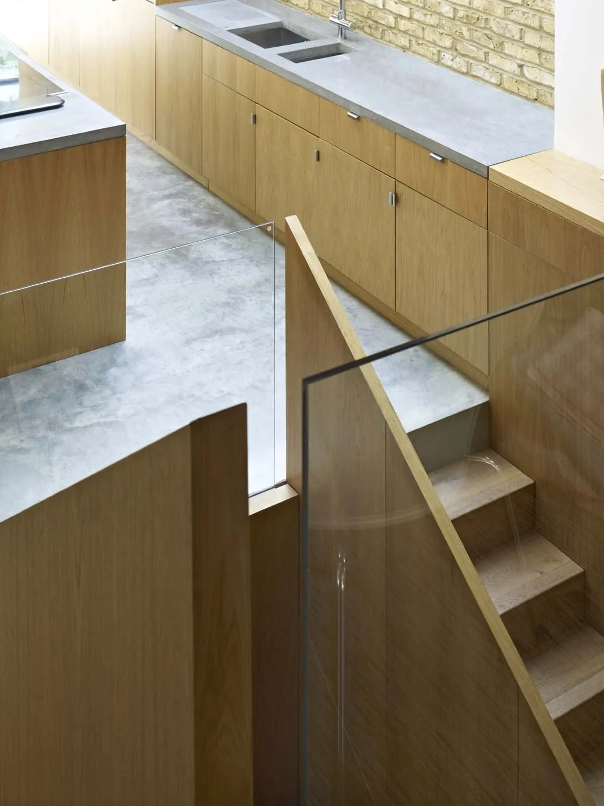
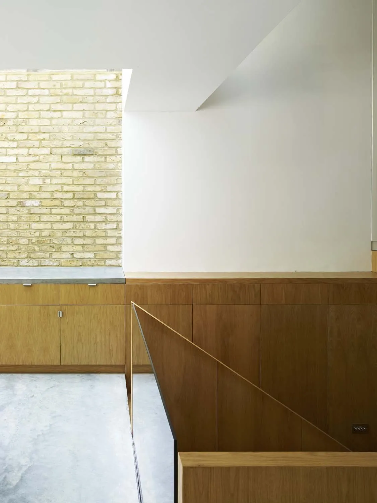
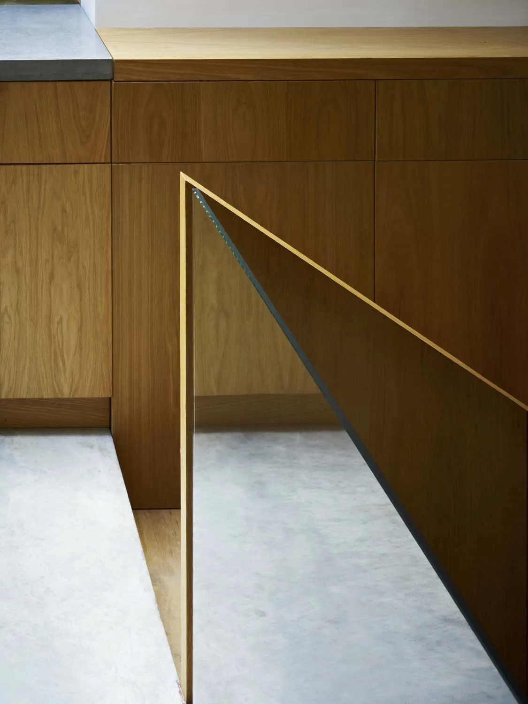
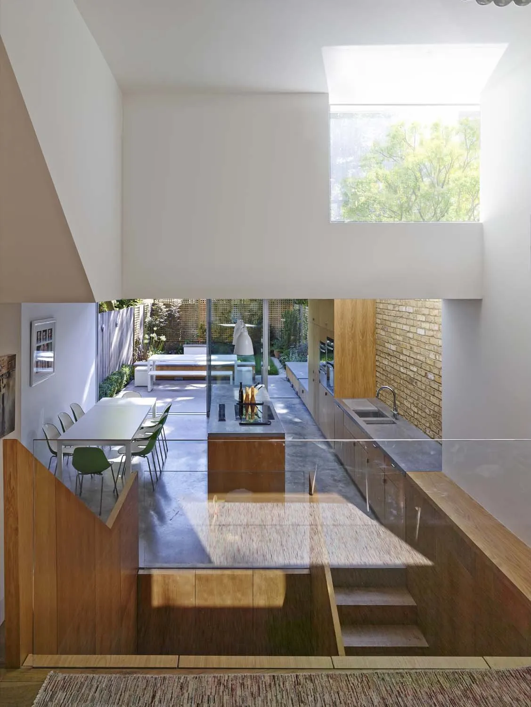
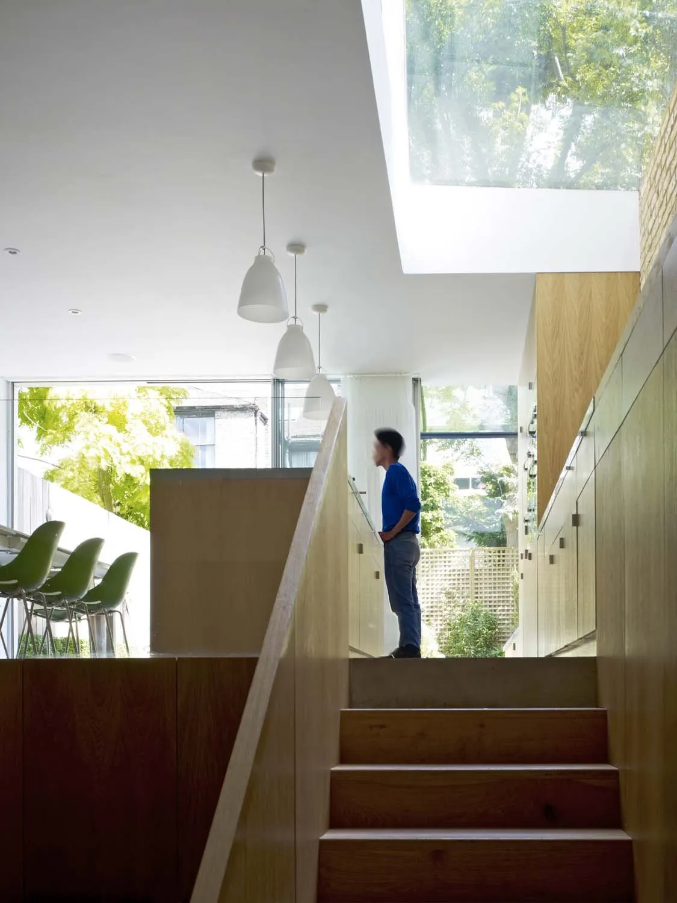
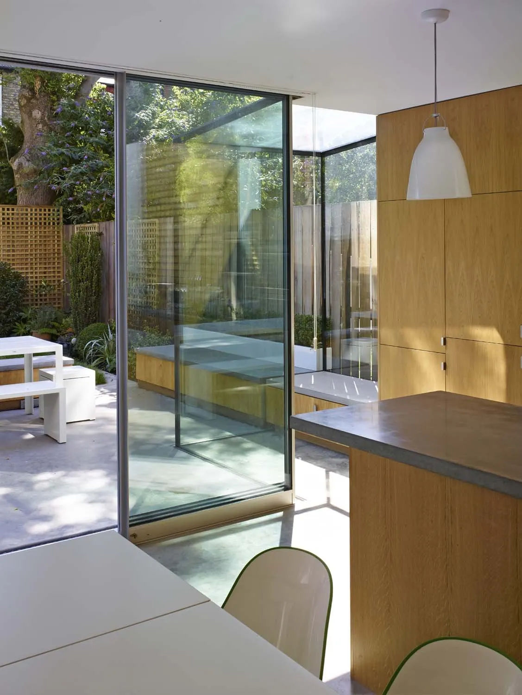
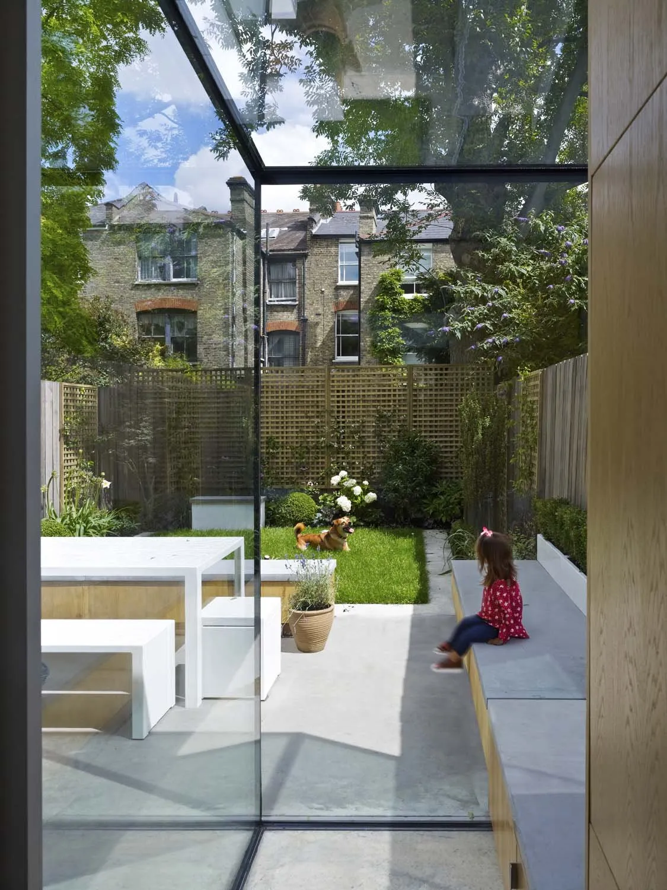
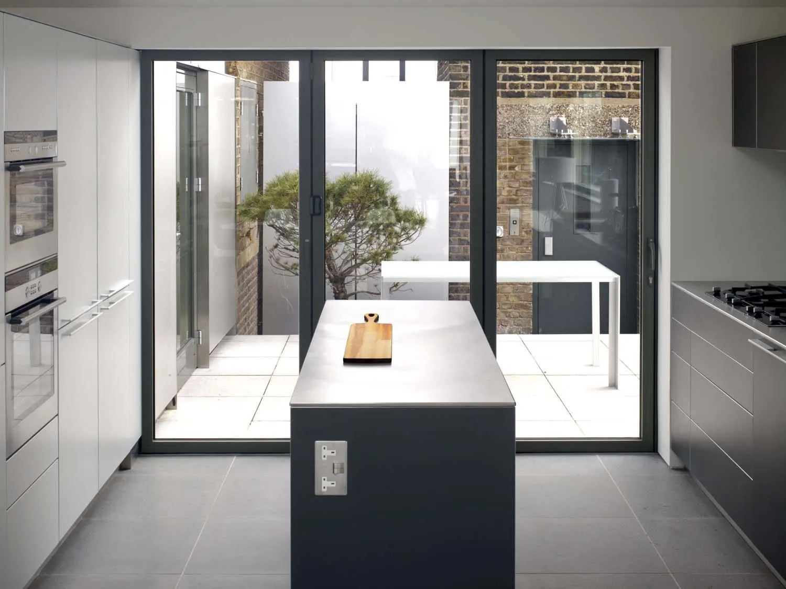

Well House
An Edwardian Islington terrace refurbished with side and rear extensions, a frameless glass box to the garden and a double-height light well that drops daylight to the basement playroom.
Lighting a deep terrace.
The site is a five-bedroom Edwardian terrace with the usual problem of a deep plan that gets very little light in the middle. The clients wanted to keep the original features they'd inherited, add side and rear extensions, and find a way to make the basement work as a real room rather than a dark cellar.
The plan reconfigures the ground floor, lowers and extends the basement, and adds a full-width single-storey extension to the lower ground with a structural glazed box that opens onto the garden. The new attic gets a bathroom; the bedrooms above are reworked.
The central move is a double-height light well dropped through the middle of the plan. Stairs flank it on both sides; the children's playroom sits at the bottom and reads upwards through three levels. Concrete floors and worktops are cast on-site, smoothed and polished, and run continuously from the kitchen out under the frameless glazing.





"The well drops daylight three storeys. The playroom reads upwards through the whole house."
Studio


What it's made of.

